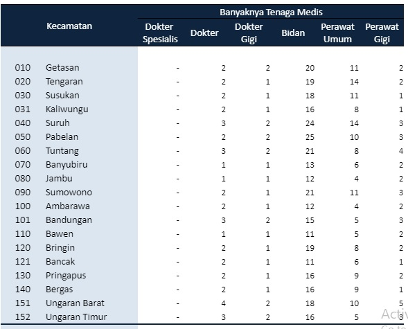
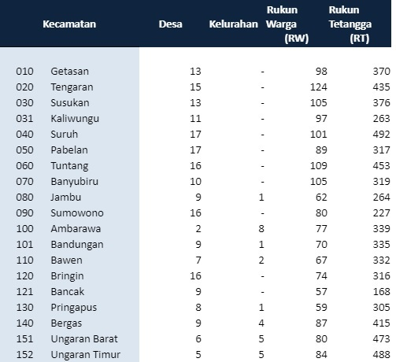

Latar Belakang
Wilayah Kabupaten Semarang terdiri 19 kecamatan, 208 desa, 27 kelurahan. Saat ini di Kabupaten Semarang terdapat 2 Rumah sakit umum di daerah yang aktif beroperasi, yaitu RSUD Ungaran wilayah utara dan RSUD Ambarawa di wilayah tengah. Sampai saat ini dengan perkembangan teknologi yang semakin pesat, untuk menuntut penerapan dalam berbagai bidang informasi, tak terkecuali dalam bidang kesehatan yang merupakan salah satu faktor informasi bagi penduduk.
Kabupaten Semarang merupakan salah satu daerah yang kaya akan obyek wisata baik
wisata alamnya yang sangat menarik, wisata budaya, peninggalan sejarah maupun sejarah
tehnologinya. Mengingat letaknya, Kabupaten Semarang berada pada posisi yang
menguntungkan, yaitu sebagai daerah penyangga (hinterland) Ibu Kota Jawa Tengah dan
mampu memposisikan daerah ini sejajar lebih tinggi dari daerah tujuan wisata lain di Jawa
Tengah. Didukung oleh kemudahan aksestabilitas jalur lalu lintas ekonomi menuju semua
obyek wisata, menjadikan paket perjalanan wisata dapat mencapai banyak obyek wisata dalam
waktu yang singkat. Oleh karena itu wilayah Kabupaten Semarang semakin hari kian banyak
menjadi perhatian pengunjung, sehingga kunjungan wisatawan domestik terutama terus
meningkat.
Dari segi kebudayaan dan kesenian Jawa Tengah pada umumnya dan Kabupaten
Semarang pada khususnya juga memiliki beberapa peninggalan yang wajib untuk dijaga
kelestariannya. Dari segi kebudayaan Jawa Tengah memiliki warisan kesenian yang cukup
beragam. Tidak hanya dari segi kebudayaan seni tari tradisionalnya saja, ada juga kebudayaan
lain berupa seni pertunjukan rakyat, seni wayang, seni teater, seni musik tradisional, seni musik
religi dll. Di Kabupaten Semarang sendiri terdapat sekitar 595 kelompok-kelompok kesenian
yang tersebar di hampir semua Kecamatan di Kabupaten Semarang. Kelompok - kelompok
kesenian tersebut perlu diperhatikan dan diberi wadah khusus agar dapat menampilkan karya
mereka secara rutin dan terjadwal. Tidak hanya kelompok kesenian dari Kabupaten Semarang
saja, kelompok kesenian di sekitar lingkup Jawa Tengah juga perlu diperhatikan
keberadaannya.
Maka dari itu Kabupaten Semarang merupakan salah satu lokasi yang tepat untuk
mendirikan Taman Budaya sebagai pusat kebudayaan kesenian serta kerajinan masyarakat,
sehingga diharapkan Taman Budaya ini mampu mewadahi aktifitas para seniman dan
masyarakat dalam mengapresiasi kreatifitas seni dan budaya lokal yang selama ini kurang
terfasilitasi oleh pemerintah setempat. Taman Budaya ini akan direncanakan menjadi Taman
Budaya yang skala pelayanannya di peruntukan tidak hanya untuk warga Kabupaten Semarang
saja melainkan untuk sekitar Jawa Tengah.
Menurut standar dari Depdikbud RI Taman Budaya memiliki fasilitas berupa gedung
pameran, teater tertutup, teater arena, teater taman, balai seni, sanggar-sanggar, wisma seni,
perpustakaan, sekretariat, ruang rapat, gudang, rumah generator, reservoir air, kafetaria, toilet,
taman, gerbang dan loket.
Data
